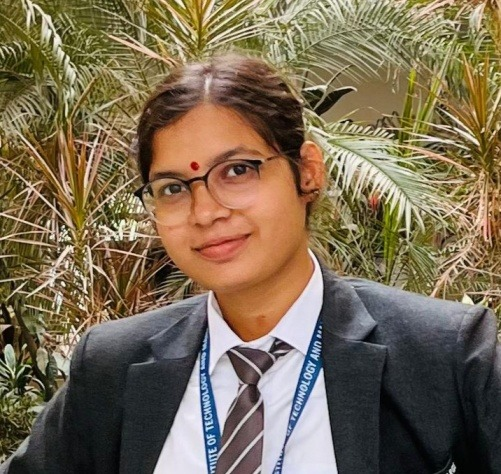

Our Destinations
Varanasi Ghats: The Soul of the Ganges
The ghats of Varanasi are full of tradition and spirituality, reflecting the city's culture and history. They are the heart of Varanasi, where daily life and rituals take place.
Kashi Vishwanath Temple: The Spiritual Jewel of Varanasi
Kashi Vishwanath Temple, dedicated to Lord Shiva, is one of India’s holiest and most revered sites. Its rich history and spiritual significance make it a deeply transformative experience for visitors.
Sarnath: The Sacred Ground of Enlightenment
Sarnath, where Lord Buddha gave his first sermon, is one of the most significant Buddhist sites in the world. Located near Varanasi, it offers a serene space for reflection and spiritual learning.
Varanasi Ghats: The Soul of the Ganges
The Ghats of Varanasi are where spirituality, tradition, and daily life converge. These centuries-old steps leading to the Ganges River are the heart of Varanasi, offering a deeply profound experience that immerses visitors in the city’s unique rhythm. The Ghats are not only sites of religious rituals but also places of reflection, contemplation, and celebration of life and death.
Must-Visit Ghats
- Dashashwamedh Ghat: Known for its grand Ganga Aarti, it's the most iconic and visited ghat in Varanasi.
- Manikarnika Ghat: A sacred cremation ghat where life and death come together in an eternal ritual.
- Assi Ghat: Famous for its peaceful ambiance and morning yoga sessions, perfect for relaxation.
- Harishchandra Ghat: Another cremation ghat with deep spiritual significance and historical importance.
Cultural Experiences
- Take a serene boat ride along the river at sunrise to witness the ghats in all their glory.
- Explore the bustling atmosphere of the ghats, where rituals, prayers, and daily life unfold.
- Try local street food, including 'kachaudi' and 'jalebi', from the stalls near the ghats.
- Attend the mesmerizing Ganga Aarti at Dashashwamedh Ghat, a spiritual spectacle that attracts visitors and locals alike.
Tips and Insights
- Best time to visit: October to March, when the weather is pleasant for exploring.
- Be prepared for the crowds, especially during peak festival times or in the evenings for the Ganga Aarti.
- Respect the local customs and the sacredness of the ghats; avoid disturbing the rituals taking place.
- Dress modestly when visiting the ghats, especially for religious ceremonies.
Kashi Vishwanath Temple: The Spiritual Jewel of Varanasi
Kashi Vishwanath Temple is one of the most revered temples in India and a significant pilgrimage site for Hindus. Dedicated to Lord Shiva, it stands as a symbol of spiritual power and devotion. With its rich history, architectural beauty, and religious significance, a visit to this temple is a deeply transformative experience.
Must-Visit Highlights
- The Sanctum Sanctorum: The heart of the temple where the sacred Jyotirlinga of Lord Shiva is enshrined.
- Shiva's Sacred Shrine: The temple's main sanctum, where devotees come to offer prayers and seek blessings from the powerful deity.
- The Golden Spire: The temple's iconic gold-covered dome is an architectural marvel that stands out against the skyline of Varanasi.
- Nearby Temples: Visit the surrounding temples, such as the Annapurna Temple and the Vishnu Temple, which enhance the spiritual ambiance of the area.
Cultural Experiences
- Morning and Evening Aarti: Witness the sacred rituals and devotional chants performed at the temple at dawn and dusk.
- Explore the temple’s narrow lanes: The area around the temple is filled with local markets, religious shops, and eateries serving traditional prasad (holy offerings).
- Participate in Prayers: Join the local devotees in chanting mantras and offering prayers, creating a sense of unity with the spiritual energy of the temple.
- Seek Blessings: Many visitors come here to perform religious rituals, like offering flowers or lighting incense, to seek Lord Shiva’s blessings.
Tips and Insights
- Best time to visit: The temple is busiest during the early morning and evening, but the best time for a peaceful visit is early in the day before the crowds gather.
- Dress modestly when visiting the temple out of respect for the sacred space.
- Be prepared for crowds, especially during major festivals like Maha Shivaratri or during religious holidays.
- Respect local customs by following temple etiquette, which includes removing shoes before entering and being mindful of photography restrictions in certain areas.
Sarnath: The Sacred Ground of Enlightenment
Sarnath, one of the most important Buddhist sites in the world, is where Lord Buddha gave his first sermon after attaining enlightenment. Located just a short distance from Varanasi, it is a place of great spiritual significance, offering a peaceful atmosphere for reflection and learning.
Must-Visit Highlights
- Dhamek Stupa: The central monument where Buddha delivered his first sermon; it is an impressive structure with intricate carvings.
- Sarnath Archaeological Museum: Home to a rich collection of Buddhist artifacts, sculptures, and ancient relics that showcase the history of the site.
- Mulagandha Kuti Vihar: A beautiful temple featuring stunning frescoes depicting scenes from Buddha's life.
- Ashoka Pillar: A historic monument with inscriptions by Emperor Ashoka, marking Sarnath’s importance as a Buddhist site.
Cultural Experiences
- Meditation and Reflection: The serene environment of Sarnath is perfect for meditation, offering a peaceful escape for spiritual reflection.
- Explore the Monasteries: Visit the various international monasteries built by Buddhist communities from countries like Japan, Thailand, and Myanmar.
- Buddhist Rituals: Witness the Buddhist monks performing rituals, chanting, and offering prayers at the temples.
- Learn about Buddhism: Take time to explore the historical and spiritual significance of Sarnath, either through guided tours or self-exploration.
Tips and Insights
- Best time to visit: October to March, when the weather is cool and comfortable for sightseeing.
- Dress modestly out of respect for the sacred Buddhist site.
- Be prepared for a tranquil atmosphere, ideal for quiet reflection, but be mindful of the tourists and pilgrims who visit.
- Respect local customs and Buddhist traditions, including maintaining silence during prayers and rituals.
Our Services
Hotels
"At Kashi Trip, we offer seamless hotel booking services with customized packages, group bookings, and VIP services to enhance your travel experience."
Vehicles
"At Kashi Trip, we offer vehicle rentals with or without a driver, along with customized packages and VIP transportation for a hassle-free travel experience."
Tour guides
"At Kashi Trip, we provide expert tour guides, offering personalized tours and VIP experiences for a memorable journey."
About Us
Praveen Sharma
Founder & CEO
Reetika Chaubey
Founder & COO

Nivedita Singh
Founder & CMO
Kashi Trip is a travel platform created by a passionate and dedicated team of B.Tech students from the field of Computer Science Engineering, with a special focus on Artificial Intelligence (AI) and Machine Learning (ML). Our team comprises Praveen Sharma, Founder & CEO; Reetika Chaubey, Founder & COO; Nivedita Singh, Founder & CMO. As second-year students, we shared a vision of blending our technical expertise with our love for travel to create a platform that not only simplifies but also enriches the travel experience.
The idea for Kashi Trip emerged from our desire to solve the common challenges faced by travelers—whether it’s finding the perfect hotel, renting a reliable vehicle, or exploring new destinations with expert guidance. We saw an opportunity to build a website that brings all of these services together in one seamless platform, offering an intuitive and user-friendly experience. Our goal is to make travel more accessible, enjoyable, and hassle-free for everyone.
At Kashi Trip, we focus on providing top-notch services, from easy hotel bookings to dependable vehicle rentals and curated tour guide experiences that help travelers immerse themselves in local culture. We are committed to ensuring that every aspect of your journey is smooth, stress-free, and memorable. With an emphasis on leveraging AI and ML for personalized recommendations, our platform learns and adapts to user preferences, enhancing your experience with every trip.
Driven by innovation and a passion for creating meaningful travel experiences, we are dedicated to making Kashi Trip a trusted name in the travel industry. Whether you’re planning a quick getaway or a long adventure, our goal is to be your go-to platform, offering reliability, convenience, and tailored travel solutions every step of the way.
Contact Us
Address: Varanasi Uttar Pradesh
Cont no: 6393605080
Email: kashitrip@gmail.com